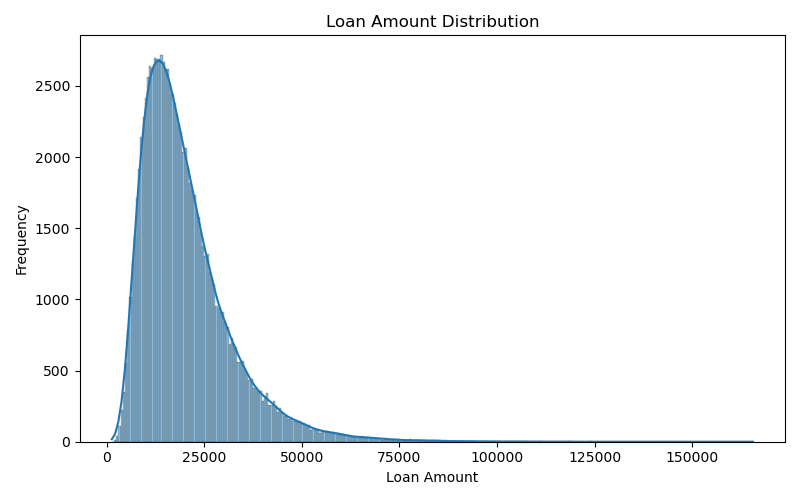
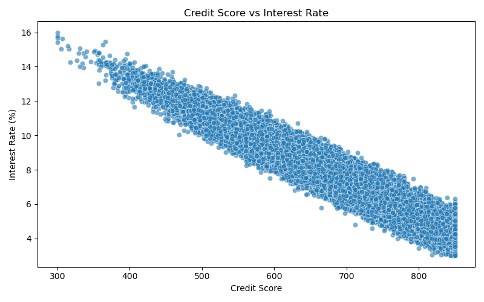
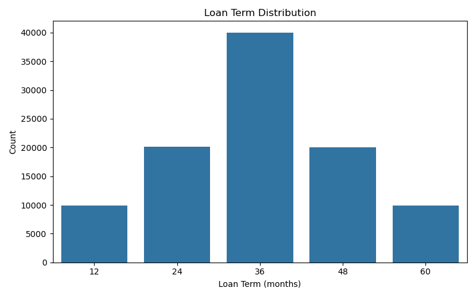
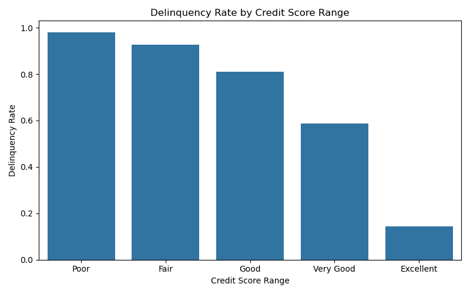
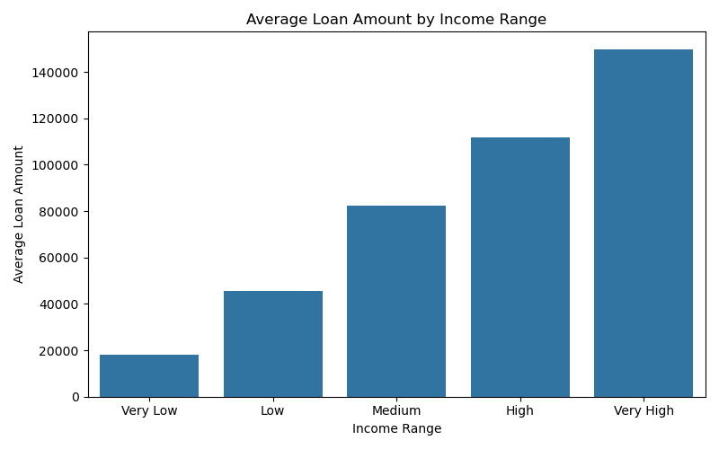
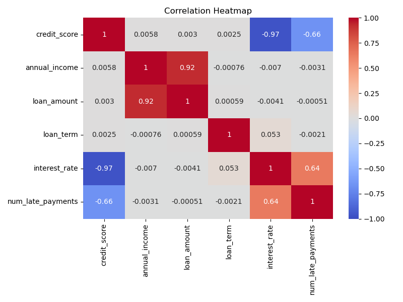
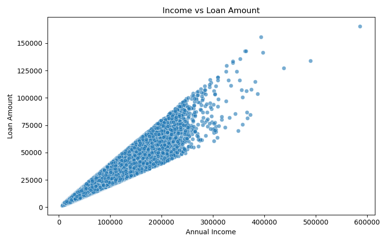
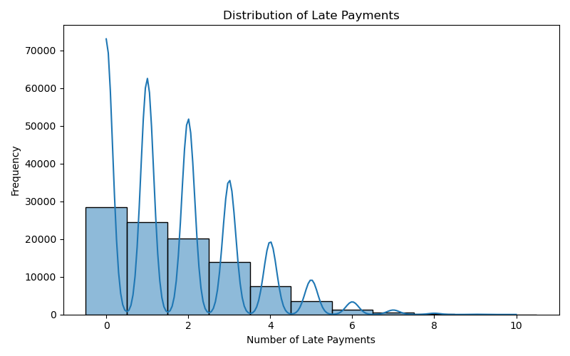

This project focuses on generating realistic synthetic loan data using Python and the Faker library to simulate loan issuance, payment behavior, and delinquency patterns. The data mimics real-world relationships between credit score, income, loan amount, interest rate, and repayment behavior.
The goal is to analyze loan delinquency trends, explore key risk factors, and create a foundation for credit risk modeling and portfolio management.
The dataset contains 1,000 synthetic loan records with the following key columns:
| Column | Description |
|---|---|
| loan_id | Unique loan identifier |
| customer_name | Borrower's name (synthetic) |
| credit_score | Borrower's credit score (300–850) |
| annual_income | Borrower's annual income |
| loan_term | Loan duration in months |
| loan_start_date | Loan issuance date |
| loan_amount | Principal loan amount |
| interest_rate | Annual interest rate (%) based on credit score and term |
| loan_end_date | Projected loan maturity date |
| payment_month_1 ... payment_month_12 | Monthly payment timeliness flags (True if late) |
| num_late_payments | Total number of late payments |
| is_delinquent | Binary flag indicating delinquency status |
The following plots provide visual insights into the loan portfolio and delinquency patterns:
       